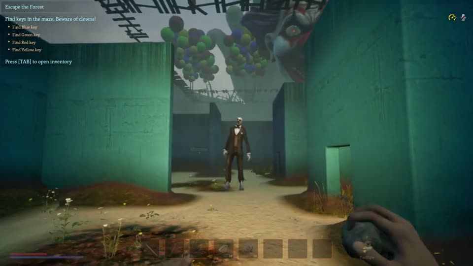
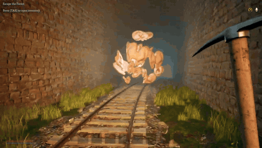

Forest Escape: Last Train review: clowns, flying ears and butts in top hats

Forest Escape: Last Train is a co-op surreal horror game for 1 to 4 players from Frag Lab, published with Two Cakes Studio and in Early Access since July 2026. You wake up at an abandoned train station in a misty forest, and to get out you keep an old locomotive running, mine coal and gold, and solve a crazy Warden's puzzles. I played it with three friends.
Our first run ended fast: red monsters jumped onto the train, blew up and wiped the whole team. On the second run we got further, past giant stone hands on the tracks and pairs of flying ears, into a maze full of clowns in tuxedos. We needed keys from the maze, and it took us too long to see the trick: a rope ladder up to a bridge over the whole thing. "Guys, guys, it's easy, all you have to do is go up."

Past the maze it gets stranger. There's a tunnel shaped like a giant mouth with a tornado of ears inside, a carousel where you copy the dance moves painted on the horses, and a lake where a giant eyeball came up and wiped us. When I found gold, I announced, "We're going to California for the gold, baby." At the Wheel of Fortune we lost our bets, then won big on 10. A few stops later I drove the train backward to go bet again. "We're going all the way back to Gambletown." We lost all of it.


The end of the video belongs to the walking butts. They're a real enemy in this game: butt cheeks on legs, wearing top hats, that chase the train and fart green gas at you. "It's an ass parade, baby." I had a couple of my own mods on too (that's why there's a banana on my shoulder), and early on I said I might need to take some of them off.

Forest Escape: Last Train is $9.99 on Steam in Early Access. We played with the full four, and that's how I'd play it. The video is below. Forest Escape: Last Train on Steam
More co-op horror with friends: Lethal Company as ducks, How to Fish and MECCHA CHAMELEON.